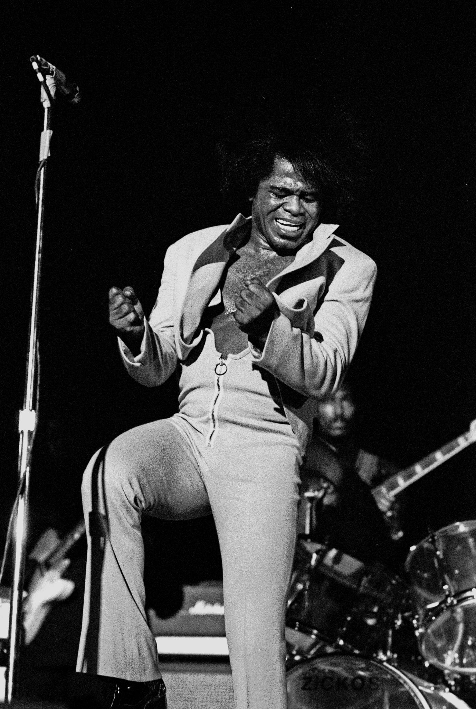

펑크(Funk)는 1960년대 James Brown이 발명한 장르. 악보상 똑같은 16비트라도, 손목을 살짝 비틀며 치는 순간 펑크가 됩니다. "Let's Groove"는 BPM 119지만 드럼이 0.03초 뒤로, 베이스가 0.02초 앞으로 어긋납니다. 이 틈이 그루브입니다.
메트로놈처럼 정확하면 재미없습니다. 조금 밀고 당기는 ±20ms 이내의 어긋남이 있어야 몸이 반응합니다. 듣는 사람 뇌가 "다음 박자"를 예측하고, 살짝 빗나갔을 때 — 그 순간 춤이 나옵니다.

James Brown, 1969